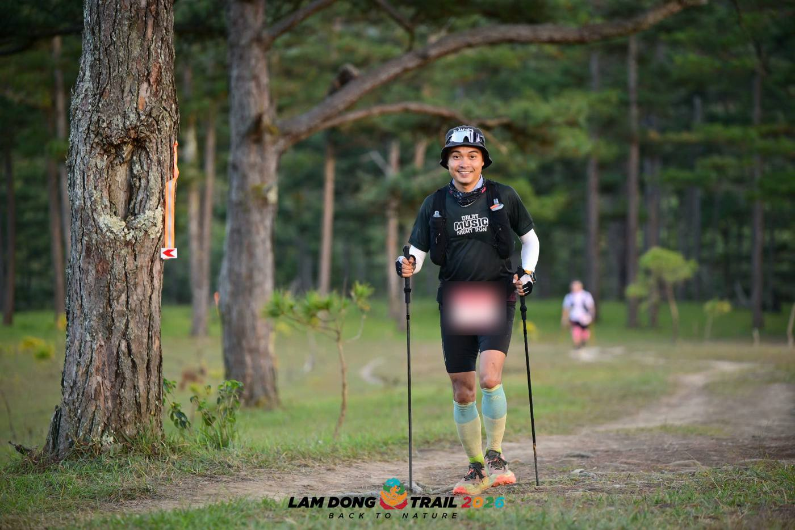

55 km làm được, kế hoạch mỗi ngày thì không: tôi đổi cách đo kỷ luật của mình
Mười ngày trước tôi đi hết 55 km đường núi trong hơn 13 tiếng. Vài hôm sau, tôi ngủ quá giờ và bỏ lỡ cả buổi sáng đã lên kế hoạch. Cùng một con người, cùng một tuần. Bài này là cách tôi đang thử trả lời cho sự vênh nhau đó — không phải bằng "cố gắng hơn", mà bằng việc đổi thứ mình đo mỗi tối.

Rừng thông ở Lâm Đồng Trail, 7/11/2026. Ảnh của ban tổ chức giải.
Câu hỏi tôi hỏi đi hỏi lại
Trong một buổi tự ghi âm cuối ngày 11/11, tôi nghe mình hỏi lại một câu cũ:
"Tại sao những việc khó như chạy marathon, thi Ironman, chinh phục cả cự ly 55 km leo núi mình còn làm được, mà kế hoạch hằng ngày của mình lại không làm được?"
Đây không phải lần đầu. Đọc lại ghi chép của chính mình, tôi đếm được ít nhất năm lần hỏi gần như cùng một câu, rải rác từ mùa hè tới giờ. Mỗi lần hỏi xong thì tự nhủ "phải kỷ luật hơn", rồi vài tuần sau lại hỏi tiếp. Hỏi tới lần thứ năm thì tôi hiểu: nếu câu trả lời là "cố hơn", thì nó đã có tác dụng từ lần thứ nhất.
Việc lớn có bốn thứ mà việc nhỏ không có
Lần này tôi thôi so ý chí, chuyển sang so cấu trúc. Đặt một giải chạy cạnh một ngày làm việc bình thường, tôi thấy giải chạy có sẵn những thứ mà ngày thường không ai đưa cho mình:
| Một giải chạy | Một ngày làm việc của tôi |
|---|---|
| Ngày thi cố định — không ai dời giải vì mình mệt | Mỗi sáng tự chọn làm gì, nên cũng tự dời được |
| Cự ly đo được — km, giờ, độ cao | "Hôm nay làm được nhiều việc" — không ai đếm được |
| Giờ cắt — quá giờ là bị loại | Quá giờ thì… để mai |
| Người thấy mình — ban tổ chức, bạn chạy cùng, trang kết quả công khai | Bỏ một việc nhỏ, không ai biết, kể cả chính mình nếu không ghi lại |
Nhìn bảng này tôi mới thấy mình đã so không công bằng. Ở giải chạy, kỷ luật của tôi được môi trường chống lưng. Ở việc hằng ngày, tôi để kỷ luật tự đứng một mình. Không phải tôi kỷ luật lúc chạy và lười lúc làm. Tôi chỉ chưa dựng cho việc hằng ngày cái khung mà một giải chạy dựng sẵn cho tôi.
Còn một lớp nữa. Hồi cuối tháng 8 tôi đã tự trả lời một nửa: tôi chạy được 55 km không phải nhờ cố trong tuần cuối, mà vì cái nền đã xây đều nhiều năm — từng buổi chạy sáng, từng giải nhỏ. Việc hằng ngày của tôi chưa có cái nền đó. Và nền thì chỉ xây được bằng những thứ lặp lại và đếm được.
Tôi đổi thứ mình đo: từ kết quả sang việc đã làm
Trước đây, cuối ngày tôi hay hỏi mình một câu kết quả: "hôm nay có gì tiến triển không?". Câu đó nghe hợp lý, nhưng nó có hai cái bẫy:
- Kết quả không nằm hết trong tay mình. Có những ngày làm đủ việc mà chưa thấy gì, có ngày chẳng làm gì mà may mắn tới. Đo kết quả theo ngày thì tôi chấm điểm cả sự may rủi.
- Kết quả tới chậm. Chờ thấy kết quả mới biết mình làm đúng hay sai thì đã trôi mấy tuần, đủ để một thói quen tốt kịp bỏ dở.
Trên đường chạy, tôi không đo "hôm nay có nhanh hơn chưa". Tôi đo đã chạy bao nhiêu km, đã tập mấy buổi trong tuần. Đó là những con số tôi tự quyết được 100%. Nên giờ cuối ngày tôi cũng đổi câu hỏi sang đầu vào: hôm nay mình đã chủ động trò chuyện với bao nhiêu người, đã hỏi thăm lại bao nhiêu người lâu rồi chưa liên lạc, đã làm xong mấy việc trong danh sách viết từ sáng. Những con số nhỏ, đếm được, không phụ thuộc vào ai trả lời mình hay không.
Mỗi tối nhìn một bảng, không nhìn cảm giác
Cảm giác cuối ngày là một thước đo rất tệ. Ngày bận rộn, chạy cả ngày thì thấy "hôm nay làm nhiều", dù việc quan trọng nhất có khi chưa đụng tới. Ngày yên ắng thì thấy "hôm nay chẳng được gì", dù đã làm đủ những việc nhỏ cần làm.
Nên tôi đang thử một nếp rất đơn giản:
- Một bảng duy nhất, vài cột, mỗi dòng là một ngày. Không ứng dụng phức tạp, không biểu đồ đẹp.
- Mỗi tối điền số, không viết cảm nhận. Có thì ghi số, không làm thì ghi 0 — số 0 cũng là dữ liệu.
- Để có người thấy được. Tôi gửi bản tổng kết ngắn ấy đi mỗi tối, để nó không còn là chuyện riêng có thể lặng lẽ bỏ qua — giống trang kết quả công khai của một giải chạy.
Hai thứ tôi còn thiếu trong bảng so sánh phía trên — con số đo được và người thấy mình — giờ đã có một phiên bản đầu tiên. Ngày thi cố định và giờ cắt thì tôi vẫn đang tìm cách dựng cho việc hằng ngày.
Nói thật: tôi vẫn đang thử
Tôi không viết bài này để tuyên bố đã giải xong. Ngay hôm trước buổi ghi âm 11/11, trời Nha Trang mưa, tôi ngủ quá giờ và không kịp đưa con đi học. Sáng hôm sau thì dậy tập đúng lịch. Một ngày lệch, một ngày đúng — chuyện đó sẽ còn lặp lại.
Điều khác duy nhất là bây giờ tôi nhìn thấy nó trên bảng, thay vì chỉ cảm thấy áy náy rồi quên. Và tôi chọn đo chuỗi theo tuần chứ không theo từng ngày, để một ngày lệch không kéo theo cả tuần bỏ cuộc — giống như trên đường chạy, một km chậm không có nghĩa là bỏ giải.
Ngày 11/11 cũng là ngày đầu tiên trong 180 ngày tôi đếm ngược tới vạch xuất phát Ironman ở Đà Nẵng tháng 5/2027 (tôi đã kể cách viết lịch nghỉ trước lịch tập trong bài sau Lâm Đồng Trail). Tôi muốn 180 ngày ấy không chỉ là 180 ngày tập, mà còn là 180 dòng trong một cái bảng làm việc. Nếu sau sáu tháng bảng này vẫn còn được điền, tôi nghĩ đó sẽ là "giải" khó hơn cả 55 km.
Nếu anh chị cũng đang có một "cự ly dài"
Không cần chạy bộ mới áp được cách này. Một câu hỏi tôi thấy có ích để bắt đầu: việc anh chị làm được tốt nhất đang có những thứ gì vây quanh — ngày cố định, con số, giờ cắt, người chứng kiến? Rồi thử mang một thứ trong đó sang cho việc mình đang lơ là. Chỉ một thứ thôi, và đo nó bằng việc đã làm, không phải bằng kết quả.
Bài viết là trải nghiệm cá nhân, đang trong giai đoạn thử, không phải phương pháp đã được kiểm chứng hay lời khuyên chuyên môn. Số liệu giải Lâm Đồng Trail (55,7 km, 13 giờ 23 phút 22 giây, ngày 7/11/2026) theo trang kết quả chính thức của ban tổ chức. Ảnh bìa đã làm mờ số áo thi đấu.
"Rồi, ngày mới tốt lành nhé."
Sống tử tế · Kiếm tiền hạnh phúc · Cho đi giá trị
Anh chị đang giữ nhịp cho việc gì?
Một cự ly chạy, một thói quen, hay chỉ là kế hoạch mỗi ngày — cứ nhắn tôi một câu, mình đổi cho nhau cách đo. Còn nếu muốn trò chuyện về nhà đất Nha Trang, tôi cũng ở đây.
Nhắn Zalo — 0869 668 638